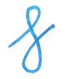

Choosing a Fountain Pen
Choosing a fountain pen is as important as choosing a shirt when shoppping for one. Determining what Fountain pen type, shape, and size is for you makes a pen more personalized and suited for your needs
Watch the following video made by JPL from youtube which explains Fountain Pens as a whole for beginners.
Choosing a Fountain Pen Nib
Fountain pens have nibs which is the part that's responsible for the writings made on paper, it is the part where the ink flows into and gets in contact with the paper. Fountain pens have different nibs that varies from types and sizes, choosing the right one for you is important to fully appreciate a fountain pen.
Watch the following video made by JetPens from youtube which explains Fountain Pen nibs in a detailed fashion
| Type / Size | Characteristics | Example |
|---|---|---|
| line width: around 0.4mm, suitable for very small writing |
img source: Jetpens |
|
| line width: around 0.6mm, suitable for small writing |
img source: Jetpens |
|
| line width: around 0.75mm, suitable for average-size writing |
img source: Jetpens |
|
| line width: around 1.00mm, suitable for large writing or signatures |

img source: Jetpens |
|
| Vertical strokes are wider than horizontal strokes, suitable for signatures and italic writing |

img source: Jetpens |
Where to buy Fountain Pens?
Fountain Pens are not that hard to find, as there are several fountain pens available in National bookstores.
For higher quality fountain pens which are in the entry-level to mid-ranged prices, Scribe is a recommended shop